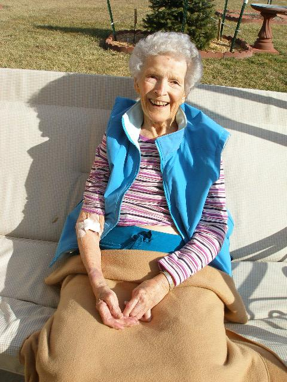
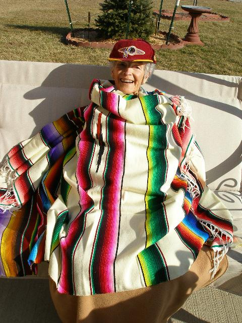

dfellows.awardspace.us/images/pics/pics6/index.html
JANUARY 22, 2009
THE WEATHER WAS NICE TODAY SO I TOOK MOM OUT AFTER LUNCH.
GOT ICE CREAM AND A COKE AT DAIRY QUEEN, PARKED AT THE
ENTRANCE TO WALMART AND PEOPLE
WATCHED. SAT IN THE SWING OUTSIDE THEIR HOUSE FOR A HALF HOUR
AND CALLED FLO, DAWNA AND BEV. WENT TO SMITH'S FOR EARLY DINNER
THEN BACK TO THE NURSING HOME AT 5:30PM. MOM'S APPETITE
REMAINS VERY STRONG, BUT SHE IS OVER MEDICATED WHICH CAUSES HER
TO RAMBLE AND HAVE DREAMS WHICH SCARE HER.
DOUG.

